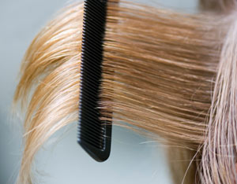

For Natural Hair Color, Color Your Hair With Natural Dyes
If your hair color is looking a little tarnished, color your hair with one of these natural dyes, including chamomile, sage, henna shrub and black walnut hulls.
By Robin Shepard
March/April 1982
Lots of people occasionally have the urge to change or enhance their hair color, but are unwilling to use the harsh and, in some cases, potentially harmful hair dying chemicals found in most commercial dyes and color rinses.
If you’re concerned about the hazards that hair color ingredients present, you’ll be glad to learn that you can achieve results similar to those possible with beauty shop products, quickly, inexpensively and safely. Just as men and women have done for thousands of years, you can change your basic hair color, put new highlights in your locks or naturally darken gray strands using natural hair colors.
How Natural Dyes Work
Although there are a few especially potent exceptions (such as henna and walnut hulls, both of which I’ll discuss later), most herbal dyes act progressively, that is, they should be used repetitively over a period of time until the desired shade is achieved. Furthermore, I don’t know of any herb that'll actually serve as a bleach, but there are plant-based colorants that will highlight, darken, lighten or cover the gray in your hair.
Despite their versatility, however, herbal infusions cannot match the strength of commercial preparations, and, unless you decide to dye your curls black, an organic rinse won't cover your hair’s present shade. The best idea is to simply enrich the natural color of your hair, so avoid trying to make drastic changes (such as turning blond tresses to a very deep shade or dyeing gray hair darker than it was originally). You should also keep in mind that herbal dyes aren’t permanent and will fade unless renewed occasionally.
If you’ve recently used commercial dyes, color rinses or straighteners on your hair, you’d be wise to test any herbaceous dyestuff before applying it to your head, since chemical residues left in your locks may make it impossible to predict the action of the natural treatment.
To perform the evaluation, you'll need to save some snips of hair from your next trim or cut a lock from the nape of your neck and prepare a small amount of whatever dye recipe you want to try. Following the instructions for that mixture, apply it to a sample of hair, then rinse the lock thoroughly and let it dry (in direct sunlight, if possible). Observe the result under strong, natural light, and if you want more or less color, simply adjust the number of rinses and/or the timing accordingly. After a couple of trial runs, you should be able to produce exactly the shade you want.
Here are several “prescriptions” that should serve at least to introduce you to the ancient science of herbal hair coloring. These few formulas (the possibilities are almost unlimited) will allow you to produce some of the most frequently used natural rinses and dyes. Whether you’re fair- or dark-haired, you should be able to find something here that will give you attractive and safe results when you try it.
More Fun for Blonds
Chamomile is probably the most popular herbal hair colorant among blonds. A weekly rinse with this herb tea will also remedy the brown streaking that results from overexposure to the sun, and brighten “dishwater blond” hair.
To prepare a chamomile rinse, steep half a cup of the flowers in a quart of boiling water for half an hour. Then strain the mixture, and let it cool while you shampoo. Now, pour the brew through your towel-dried hair at least 15 times (catching it in a basin each time, in order to use it again). Wring the excess moisture out and leave the solution in your hair for a quarter of an hour before rinsing it out with clear water.
Don’t limit your herbal experiments to chamomile, however. Just about any yellow-blossomed flower or herb can be used on blond hair, including calendula (it’s also called pot marigold), mullein blooms and leaves, yellow broom flowers, saffron, turmeric and quassia chips.
Lemon is also a time-honored hair lightener. The juice of two of the citrus fruits, strained into a quart of water, makes an excellent rinse that can be used in the same way as the chamomile preparation. Try to dry your hair in the sun after using a lemon rinse, in order to get the most from the treatment’s lightening effect.
Another native dye favored by blonds is prepared from rhubarb root, and it’ll add attractive honey gold tones to light brown hair, as well. To put those glints in your locks, pour three cups of hot water over four tablespoons of chopped rhubarb root, and simmer the concoction for 20 minutes. Strain it, pour it through your freshly shampooed hair 15 or more times, rinse in clear water and again, weather permitting, dry it in the sun to strengthen the effect of the dyeing agent.
A Bonus for Brunets
For over 5,000 years, Egyptians have used a dark powder made from the henna shrub to give their hair and beards an auburn tint. Nowadays, you can buy henna powder from many herb supply houses and some health food stores and co-ops. It’s known as a safe, healthful dye, and - since it coats the cuticle layer of each strand - it’ll actually make your hair feel thicker. However, be warned that henna tends to produce an almost brassy orange-red shade when used alone, so it’s best to mix it with a “lighter” herb like chamomile. (Since it is so strong, henna shouldn’t be used at all by persons with white, gray or very light blond hair.)
Always try a timed test swatch first, too. Otherwise, you might end up with an unexpectedly bizarre orange head! If you’d like to mix up my favorite recipe (I’ve found that it puts pretty reddish gold highlights in my dark mane), measure one part of powdered chamomile and two parts of powdered henna into a nonmetal bowl, then add enough boiling water to make a thick paste. Stir in a tablespoon of vinegar (which will help release the plants’ colors) and let the blend cool for a few minutes.
When the paste is lukewarm, put on a pair of rubber gloves (henna can stain your palms and fingernails, too) and massage it into your clean, wet hair. Comb it through with a wide-toothed comb to insure even distribution of the dye. Next, pile up your hair, fit a plastic bag over it and wrap a heavy towel around your head to hold in the heat.
You’ll need to leave the dye and towel turban in place for anywhere from 30 minutes to two hours: The darker your natural hair is, the longer you'll have to wait for the henna-chamomile to take effect. When the time is up, remove the towel and bag and rinse your hair until the water comes clean, then allow the newly colored tresses to air-dry, as usual, in the sunshine if possible. (Any stains that the dye might leave on your hands or around your hairline can be removed with a little elbow grease and lemon juice.)
Should you prefer a simpler (and slower-acting) procedure, you can make a weaker solution of the herbs and use it as you would any of the previous color rinses. Just mix together one tablespoon each of henna, chamomile and vinegar, then steep them in a quart of boiling water for 15 minutes. Naturally, you should cool and strain the liquid before using it.
Some “Sage” Advice
Of course,darker-haired beauties sometimes need to enhance the color of their locks, too, and sage is one of the oldest (and most effective) colorants for use on dark brown or black hair. A rinse made from sage leaves can be used to deepen any brunet shade, and it’ll also effectively cover gray in dark hair.
A sage rinse can be made by steeping a handful of the dried herb in a quart of boiling water for 30 minutes (longer, if you want a darker tint). Cool the infusion, strain it and pour it through freshly shampooed hair 15 or more times. Then wait 10 minutes before washing the liquid out with clear water. Because a sage rinse is a progressive dye, you’ll have to apply it weekly until you produce the shade you want, and then continue using it once a month to maintain that color.
Tag alder bark is another popular hair-darkening botanical, but it generally produces a lighter tone than sage, so it’s best when used to darken blond hair or to cover gray in locks that are light to medium brown. To make a tag alder rinse, simmer an ounce of bark chips (your health food store can likely order them from an herb supply firm) in a quart of water for about half an hour, then cool and use it exactly as you would the sage rinse I’ve already described.
A very dark, sable-colored dye can be obtained from walnut hulls, but this one is tricky, since the nuts’ outer casings tend to stain everything they touch (for that reason, I recommend that you wear gloves throughout all stages of the process, and avoid rubbing the mixture into your scalp). To prepare the dark juice, first crush the hulls in a mortar, cover them with boiling water and a pinch of salt, and let them “soak” for three days. Then add three cups of boiling water and simmer the hulls, in a nonmetal container, for five hours (replacing the water as it steams away). Strain off the liquid, place the walnut hulls in a cloth sack, and twist it tightly to wring out all remaining juice. Finally, return the expressed liquid to the pot and reduce it, by boiling, to about a quarter of its original volume. The resulting brew can then be used to whip up a rich walnut dye, as follows.
Add a teaspoon of ground cloves or allspice to the prepared extract. Allow the dye mixture to steep in the refrigerator for about a week (shaking it frequently during that time). When it’s ready for use, strain the liquid (using a piece of cheesecloth) and pour it at least 15 times through freshly shampooed hair before rinsing it out thoroughly.
By experimenting with the formulas contained in this article, you’ll be well on your way to achieving just about any hair shade you’d like, without resorting to expensive, unsafe chemical dyes. Soon you should be able to experience the same pleasure I feel when dyeing my tresses with herbs. I know - while doing so - that I’m not only saving money by using easily gathered materials, but also protecting the health of my locks. If you experiment a little, you can have fun coloring your hair, too ... naturally!
EDITOR’S NOTE: More recipes for natural hair colorants, as well as for shampoos and other preparations, can be found in Dian Dincin Buchman’s The Complete Herbal Guide to Natural Health and Beauty.
 DON SCHMIDT By experimenting with the formulas in this article, you’ll be well on your way to achieving just about any hair shade you’d like, without resorting to expensive, unsafe chemical dyes. |
 ISTOCKPHOTO If you’re concerned about the hazards that hair color ingredients present, you’ll be glad to learn that you can achieve results similar to those possible with beauty shop products, quickly, inexpensively and safely, by using natural hair dyes. |
|